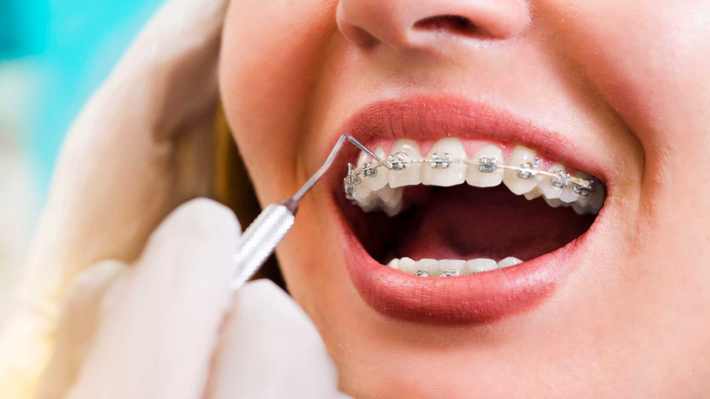

Ortodoncia: Transforma tu Sonrisa con un Alineamiento Dental Preciso
La ortodoncia es una especialidad de la odontología dedicada a corregir la posición de los dientes y la mordida para lograr una sonrisa más estética y funcional. A través de diversos dispositivos, como los brackets, los alineadores transparentes y los aparatos removibles, la ortodoncia puede resolver una variedad de problemas dentales, desde dientes apiñados hasta mordidas mal alineadas.
En nuestra clínica, entendemos que cada sonrisa es única, por lo que ofrecemos tratamientos de ortodoncia personalizados para satisfacer las necesidades individuales de cada paciente. Nuestro equipo de ortodoncistas altamente capacitados utiliza las últimas técnicas y tecnologías para planificar y ejecutar un plan de tratamiento eficaz y cómodo.
Durante una consulta inicial, evaluaremos cuidadosamente tu sonrisa y discutiremos tus objetivos de tratamiento. Luego, te explicaremos las opciones de ortodoncia disponibles y te recomendaremos el enfoque más adecuado para ti.
Ya sea que elijas brackets tradicionales, alineadores transparentes o aparatos removibles, te guiaremos a lo largo de tu viaje de ortodoncia con atención personalizada y apoyo continuo. Nuestro objetivo es no solo mejorar la apariencia de tu sonrisa, sino también mejorar la función y la salud de tus dientes y encías.
Si sueñas con una sonrisa más recta y atractiva, ¡la ortodoncia puede hacerlo realidad! ¡Contáctanos hoy mismo para programar tu consulta inicial y dar el primer paso hacia una sonrisa transformada y llena de confianza!
